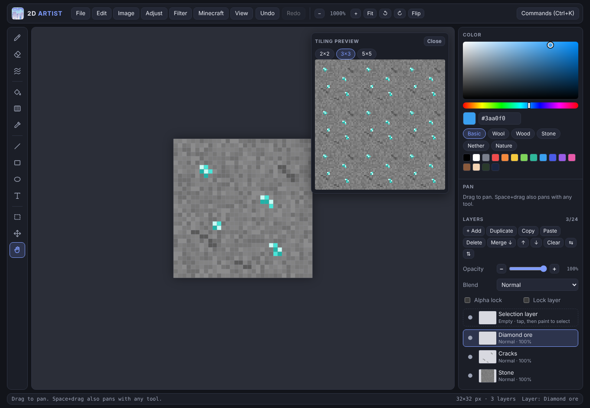
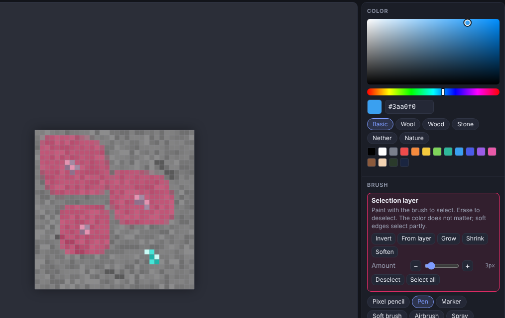
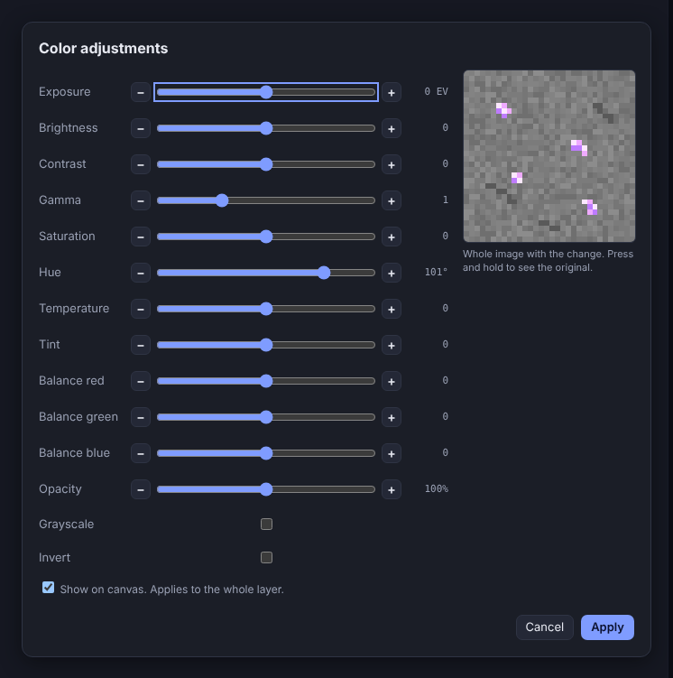

Paint a tile. Watch it repeat.
2D Artist is a pixel art and texture editor for Minecraft Bedrock add-ons and other game art. It runs in your browser, works offline after your first visit, and never uploads your pictures.
No account, no sign-in. Save your work as PNG, JPG, WebP, SVG or a project file that keeps your layers.
A small taste of the editor's Tiling preview, which also repeats your texture 2×2 and 5×5.
The editor
Layers, brushes, a selection you paint, and the checks game textures need, in one page. Here it holds a stone tile with ore on three layers.

Paint the area you want to select
The Selection layer sits at the top of the layer list. Paint on it with any brush to mark an area, and erase to take parts away. Brushes, fills, moves, copy and colour changes then only touch what you painted.
Invert the selection, grow it, shrink it, or soften its edge so changes fade in.

See the whole picture while you adjust colour
Colour adjustments and filters show a small preview of the entire image next to the sliders, so you judge a change against everything else. Press and hold the preview to see the original.
Here the hue of the ore layer is shifted. The stone around it stays as it was.

What else is in the toolbox
Drawing
Eleven brushes: pencil, pen, marker, soft brush, airbrush, spray, chalk, ink, calligraphy, dotted and stamp. Import a PNG as your own stamp shape. Eraser, smudge, bucket fill, gradient, eyedropper, line, rectangle and ellipse, with a stabilizer for smooth lines and mirror drawing.
Layers and text
Up to 24 layers with opacity, blend modes, alpha lock and layer lock. Every piece of text gets its own layer, stays editable, and can be dragged into place. Import .ttf, .otf, .woff or .woff2 fonts and they are there next time.
Minecraft textures
Canvas sizes from 16×16 up, a pixel grid, 2×2, 3×3 and 5×5 tiling preview, a UV template overlay, a texture checker, highlighting for semi-transparent pixels, animation frames, and sprite sheet slicing and atlas building.
Gallery
The editor opens on a gallery of all your drawings, like ibis Paint. Every drawing is saved automatically while you work and stays until you delete it yourself. Rename, duplicate or save a copy of any drawing from its menu.
Files
Open and save PNG, JPG, WebP, SVG, BMP and TGA. The project format keeps your layers and editable text. Transparency is kept wherever the format allows it. Undo and redo cover everything.
Three ways to use it
It is the same editor and the same files in all three. Pick whichever suits you.
In your browser
Nothing to install. Works in current Chrome, Edge, Firefox and Safari, on a computer or a tablet.
Open the editorInstalled as an app
Gets its own window and icon, and opens with no internet. In Chrome or Edge, use the button below or the install icon in the address bar. On iPhone and iPad choose Share, then Add to Home Screen. In Safari on a Mac choose File, then Add to Dock.
Your browser has not offered to install it yet. It usually does after a short visit.
Windows folder app
Download the zip, extract it anywhere and run 2D Artist.exe. It uses the normal Windows Open and Save windows and needs no browser. About 145 MB, for Windows 10 or 11 (64-bit).
Download for WindowsThe program is not code-signed, so Windows may ask you to confirm. Choose More info, then Run anyway.
Questions
Does it work offline?
Yes, once you have opened the site while online. After that the editor loads from a copy saved in your browser, whether you open it from the site or as an installed app. When you are back online, the next visit picks up any newer version.
Are my pictures uploaded anywhere?
No. The editor is a static page and everything happens on your device. Your gallery lives in your browser's storage on this computer. Drawings stay there until you delete them, but clearing the site's data in the browser settings erases them too, so use “Save a copy to a file” on a drawing you cannot lose.
Where do saved files go?
Save and Save As write to a file you choose. Chrome and Edge show a normal save window and keep saving into the same file. Firefox and Safari download the file to your Downloads folder instead. The Windows app always uses the Windows save window.
Is the SVG a vector drawing?
No. The SVG holds your picture as an embedded image. It opens in any SVG viewer, but you cannot edit shapes in it. Use the project format when you want to keep editing with layers.
Does it work on a phone or tablet?
The layout adapts to narrow screens and has a Panels button for the side panels. Touch and stylus drawing work, though pixel work is easier with a mouse or a pen tablet.
Found a bug or want a feature?
Open an issue on the project's GitHub page and describe what happened or what you need.